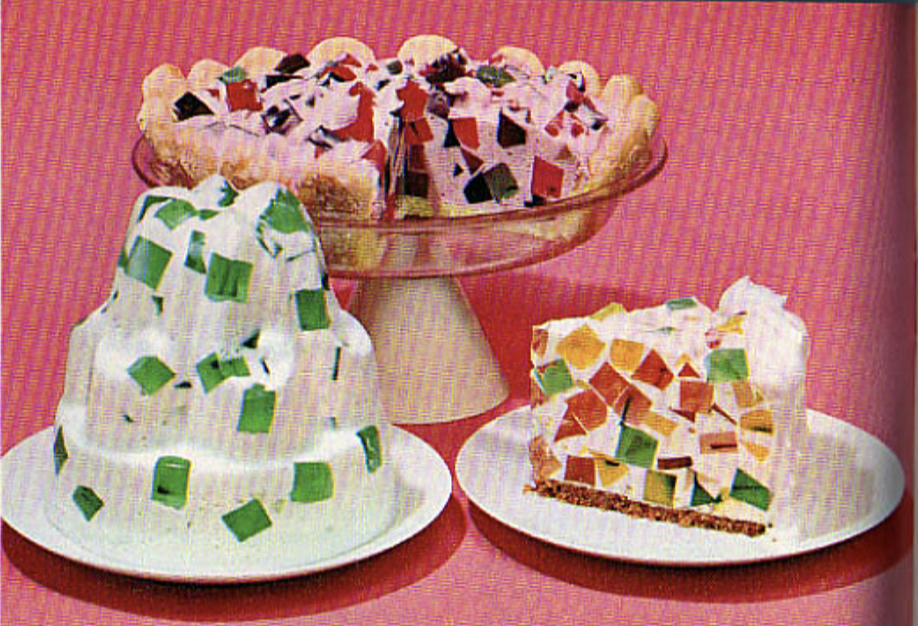

Crown Jewel Dessert

A spectacular dessert that fits busy schedules - the gelatin for cubes may be made one day, remainder of dessert can wait until the next day.
Ingredients
- 1 package (3oz) each Jell-O Orange, Cherry, and Lime Gelatins
- 4 cups boiling water
- 1 1/2 cup cold water
- 1 package (3oz) Jell-O Lemon Gelatin
- 1/4 cup sugar
- 1/2 cup pineapple juice
- 1 1/2 cups graham cracker crumbs*
- 1/3 cup melted butter or margarine
- 2 envelopes Dream Whip Topping Mix or 2 cups whipping cream
Steps
- Prepare the three flavors of gelatin separately, using 1 cup boiling water and 1/2 cup cold water for each. Pour each flavor into an 8-inch square pan. Chill until firm, or overnight.
- Then combine the lemon gelatin, sugar, and remaining 1 cup boiling water; stir until gelatin and sugar are dissolved. Stir in pineapple juice. Chill until slightly thickened.
- Meanwhile, mix the crumbs and melted butter; press into bottom of a 9-inch springform pan.
- Cut the firm gelatins into 1/2-inch pieces. Then prepare whipped topping as directed on package or whip the cream; blend with lemon gelatin. Fold in gelatin cubes. Pour into pan.
- Chill at least 5 hours or overnight. Run knife or spatula between sides of dessert and pan, and remove sides of pan before serving. If desired, spread additional whipped topping on top and sides. Makes 16 servings.
*Or use 16 to 18 ladyfingers, split, to line pan instead of crumb-butter mixture.